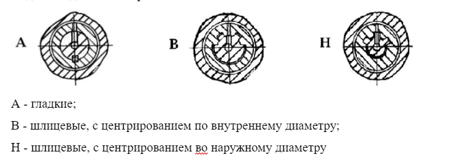
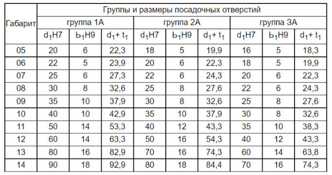
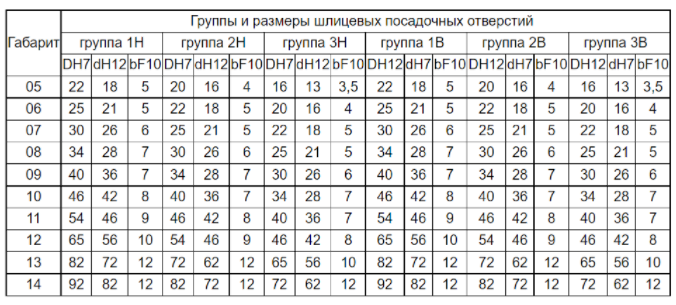
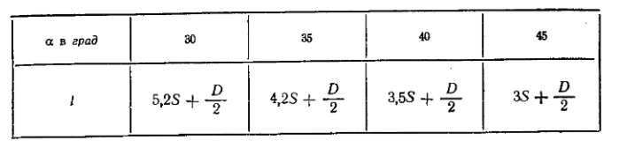

Виды посадочных отверстий:
Таблица 5: Группы и размеры посадочных отверстий
Таблица 6, 7: Группы и размеры шлицевых посадочных отверстий
Провальные отверстия в плитах. Размеры провального отверстия в нижней части штампа должны быть на 1—2 мм больше размера провального отверстия матрицы (рис. 5.1.1, а).
Если отверстие в плите штампа выходит за пределы провального отверстия в плите пресса, следует отверстие для провала выполнить под углом а (рис. 5.1.1, г). Если отверстие в штампе расположено близко к краю плиты, то для провала отхода надо сделать скос под углом а фис. 5.1.1, 3). Рекомендуемые значения а и I приведены в табл. 5.1.1.
Табл. 5.1.1
